Voice-first PWA · 0→1 · 2026
yap is a voice-first group chat where AI splits long voice memos into topics friends can reply to one by one. Designed and built as a live PWA.

Problem
Every way we “yap” today breaks down somewhere.
Friends want to catch up the way they talk: long, rambling, in their own voice. The tools they have each fail at a different point.
Calling
Everyone has to be free at the same time.
Texting
Long thoughts get cut down to the functional parts.
Voice memos
Five topics buried in one recording, hard to answer one.
Opportunity
How might we make asynchronous voice conversations feel as natural and easy to follow as real-life conversations?
Solution
Talk once. yap finds the topics and leaves the voice alone.
The sender records one memo. yap finds where the topic changes, splits the audio there, and texts the group. Friends play only what’s new and reply to the one topic they have something to say about.
Reply
Reply to the part you actually have something to say about.
Each topic has an AI-written label and its own clip. There’s nothing to read: you hear it in their voice, and your reply lives inside that topic.
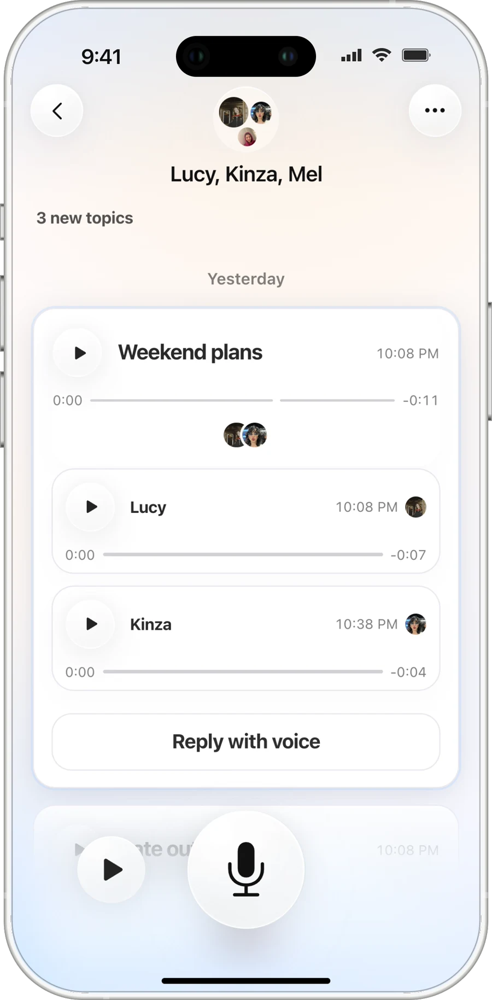
Join
Friends join from a text. No App Store, no install.
Enter your number, enter the code, and the chat opens.
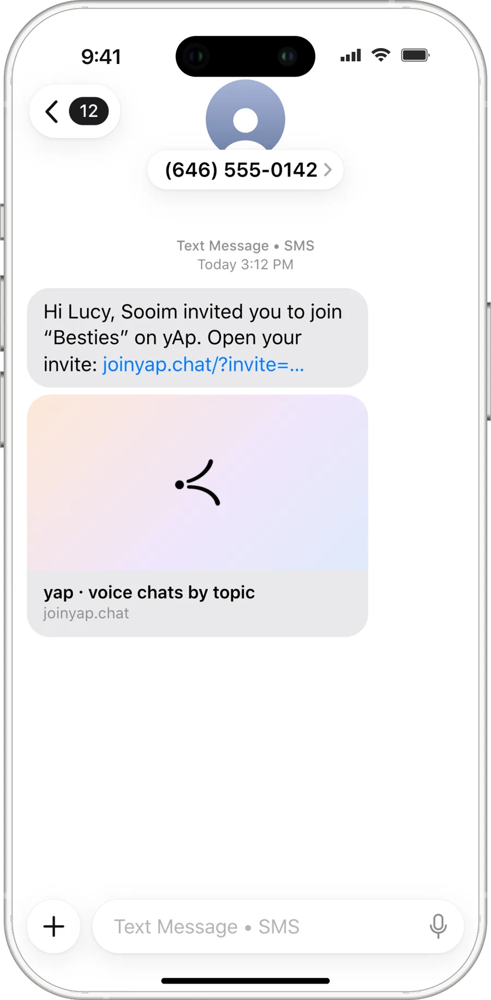
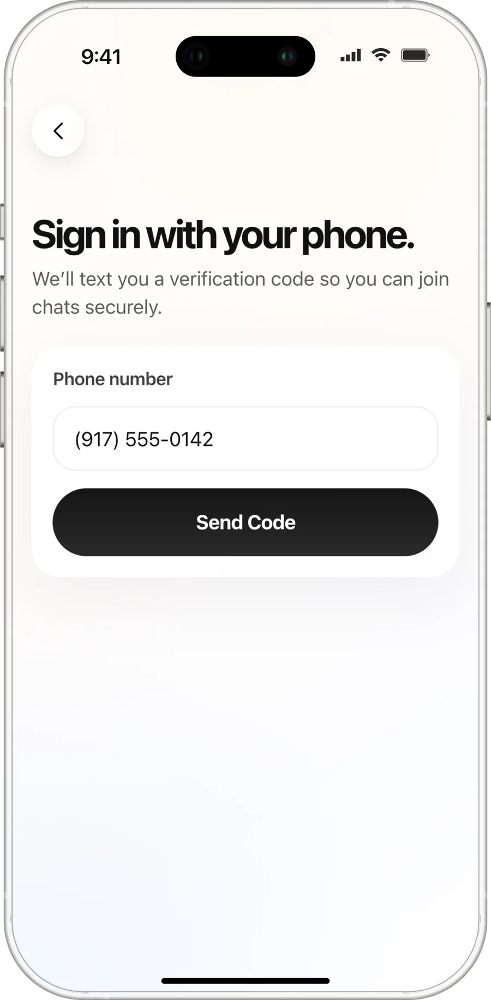
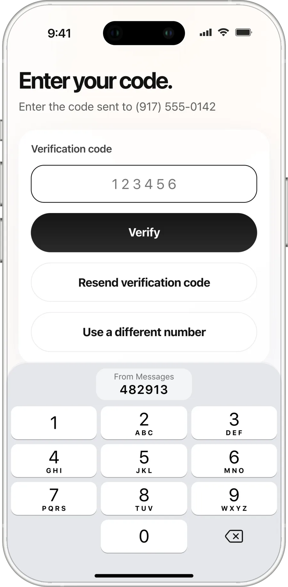
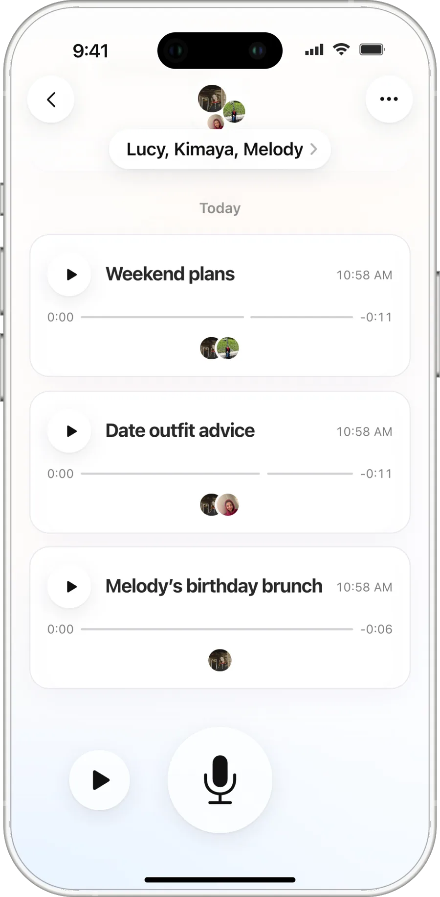
Core features
Three features turn a voice dump into a conversation.
Listening, the AI in the middle, and replies that land in the right place.
Feature 01
Catch up in seconds, one topic at a time.
New topics come first. Tap one and yap plays just that part of the memo, then moves speaker by speaker, with the person talking in the middle of the screen.
Feature 02
Talk once. AI finds the topics and cuts the audio.
yap transcribes the memo, finds where the subject changes, and splits the recording at those exact words, so each topic is its own clip with its own label.
Feature 03
Replies thread under the topic they answer.
Open a topic to hear everyone’s replies in order, then tap Reply with voice. Your answer lands inside that topic, not at the bottom of the chat.
Demo
Don’t take my word for it. Try it.
This is the real app, running my chats with friends. Open a chat, play a topic, and leave a yap of your own.


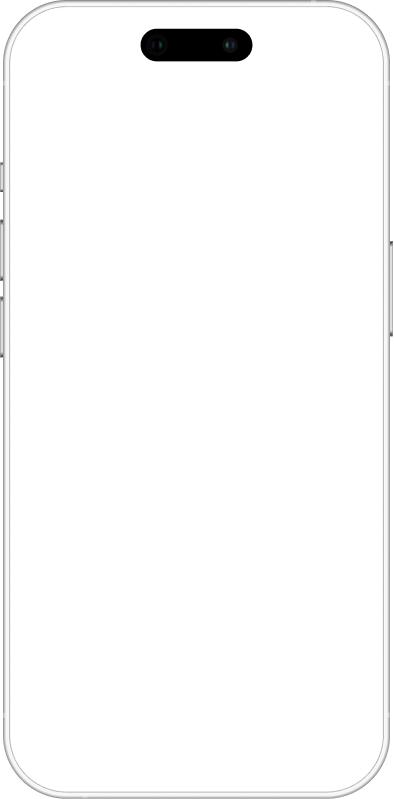
Build
I designed yap in Figma, then built and shipped it myself with coding agents.
There was no handoff to an engineering team. yap is a live product on a real stack, built over two months (129 commits) with Claude Code as my main collaborator, plus Cursor and Codex. Claude co-authored about two-thirds of the commits. I made the product calls, reviewed every change in the browser, and deployed it myself.
Stack
One memo, end to end: from a text message to a threaded reply.
Each step names the piece of the stack that makes it work. The browser records, a serverless function runs the AI, Supabase keeps the conversation, and Twilio brings people back.
A friend’s first yap, end to end
Why a PWA
I shipped a PWA with text-message invites, so friends join from a link, not an App Store.
A native iOS app meant TestFlight, an install before anyone could reply, and extra Apple setup for push. For a group chat, every install is a friend who never joins. A PWA opens from a text in one tap and still feels native: full screen, home-screen icon, microphone access.
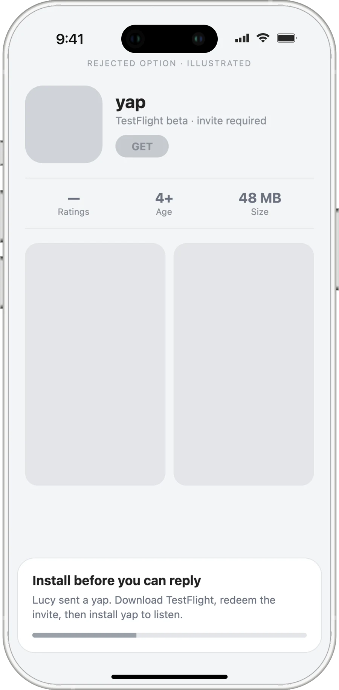
AI
The model decides where a topic starts. The code makes sure it can’t lie about it.
Transcription and topic splitting run as two steps. The segmentation prompt asks for JSON with a label, a short excerpt, and the first few words of each topic copied exactly from the transcript. Those anchors, not the model’s timestamps, decide where the audio gets cut, using word-level timings from a second transcription pass.
The rules are product decisions written for the model: prefer fewer topics when a boundary is ambiguous, never paraphrase, at most six topics, and attach to an existing thread only on a strong match, using what the listener just played as context.
One memo → topic clips · version 1
One memo → topic clips · version 3
One memo → topic clips · version 4
What one memo becomes in Supabase
What one memo becomes in Supabase · earlier version
Design
I designed the core screens in Figma, then gave them to the agents through Figma’s MCP server.
I laid out 23 core screens in one row, from opening the app to sending a reply, and named each frame for the moment it shows: recording, send-analyzing, maria-response. Agents read the frames directly through the Figma MCP and built against them. I compared every build to its frame and sent it back when it drifted.
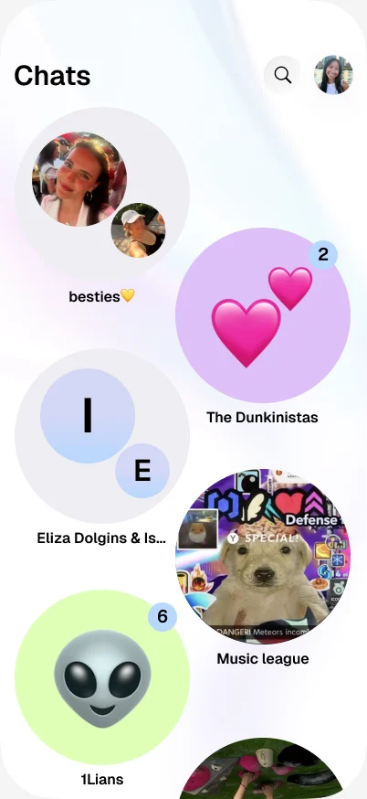
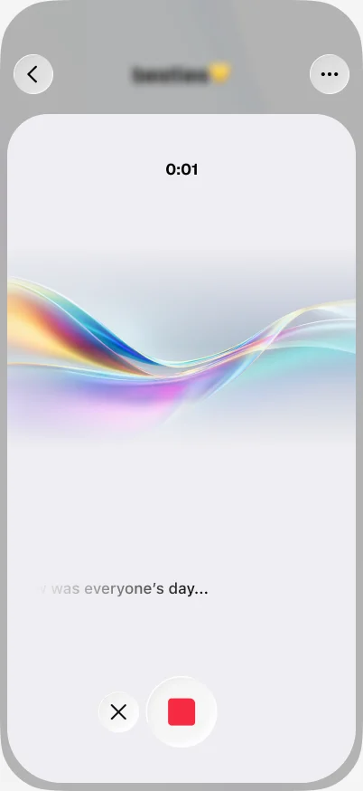
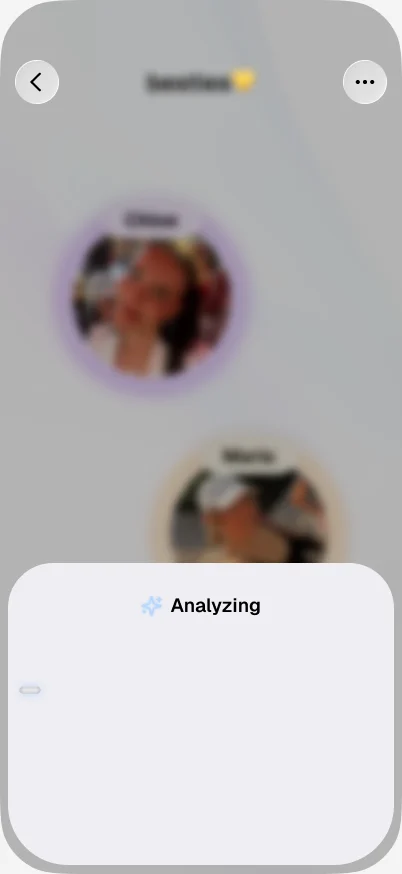
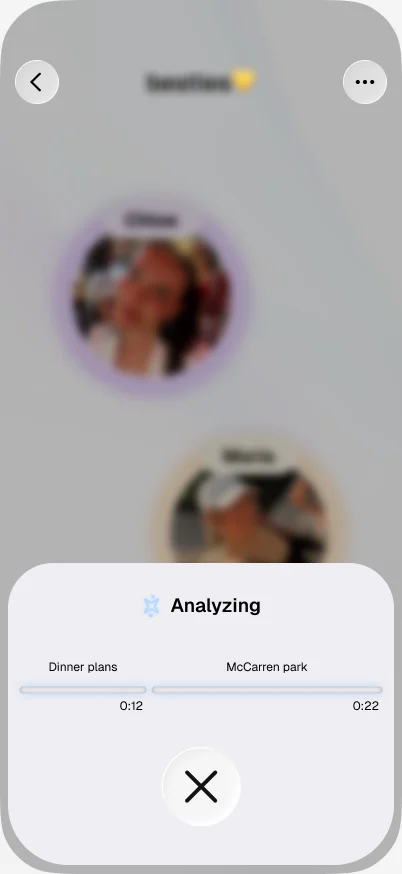
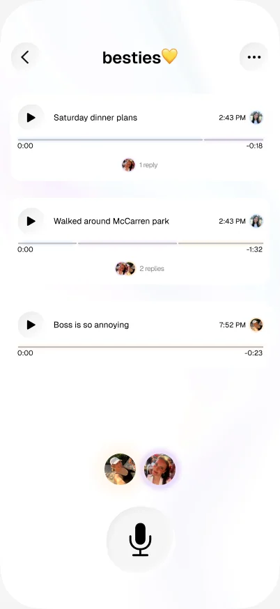
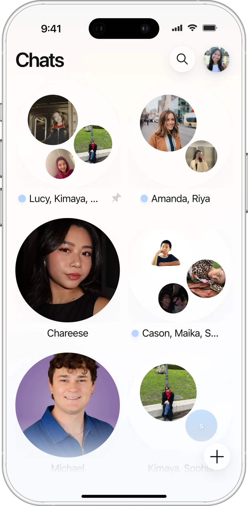
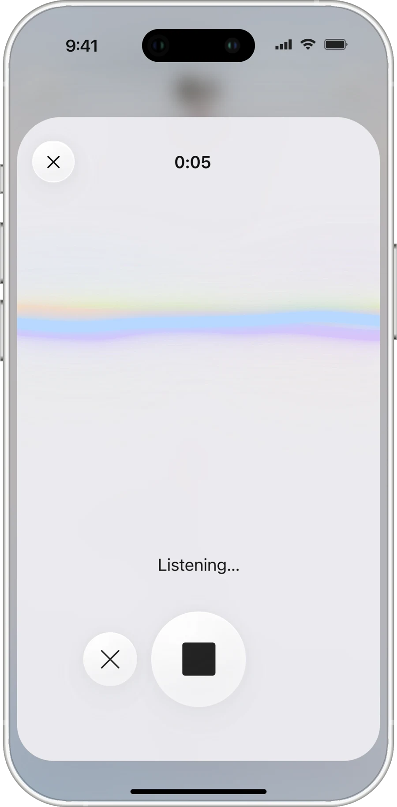
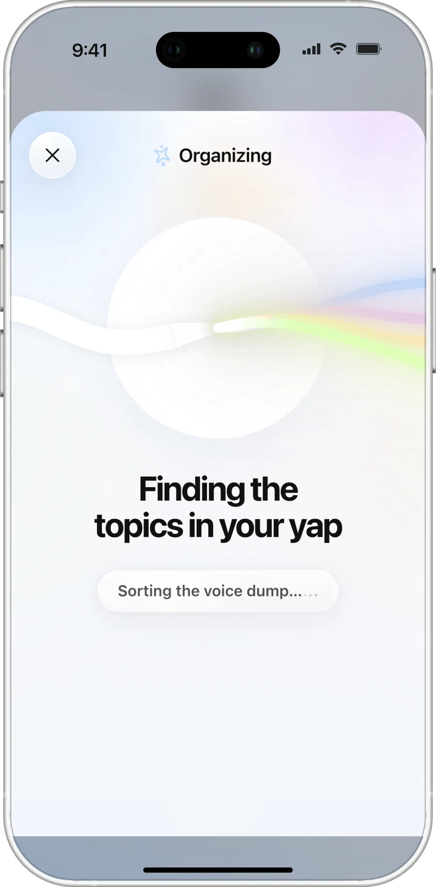
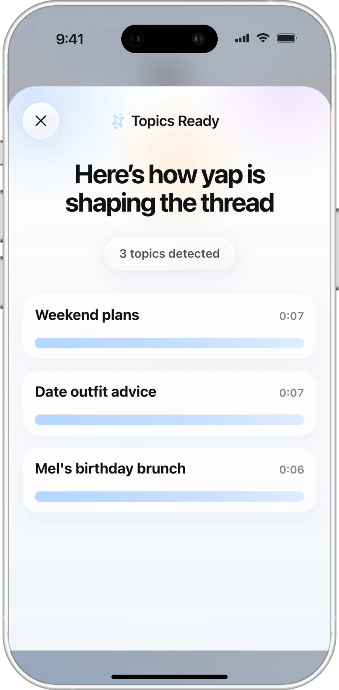
Define
I wrote the rules the agents worked from, the same way I’d write a spec for a team.
The repo opens with an operating guide for any coding agent, a style contract, a product brief, and step-by-step recipes. The rules are product decisions: no fake flows, every visible control has to work, and messaging has to work even with the AI turned off.
The spec the agents built from
Testing & debugging
Real memos are rambling. The first versions broke on them.
I tested with my own group chats every day, and two failures shaped the product more than any screen.
Bug 01
The AI merged topics, or rewrote what people said.
On long memos the model often returned one giant topic, and when it did split, it paraphrased the text, so the app couldn’t find where each topic began in the audio.
The fix: every topic has to start with words copied verbatim from the transcript, and if a long memo still comes back as one topic, yap splits it at sentence boundaries using the word timings. The model can be wrong; the audio can’t be misaligned.
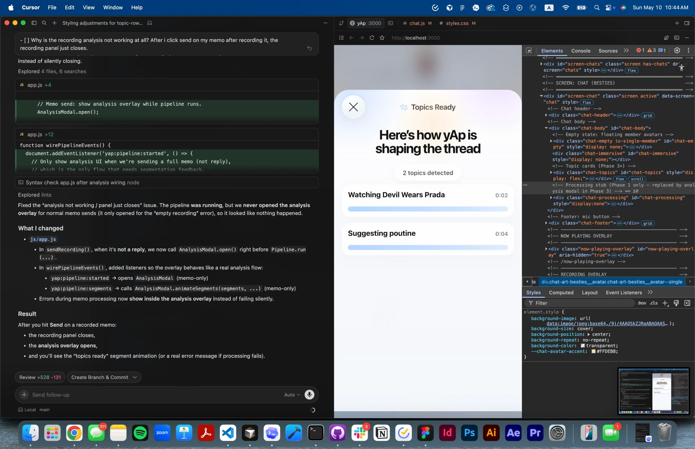
Bug 02
Playback drifted from the topic it was supposed to play.
Tapping a topic sometimes played the whole memo from the start, or cut off mid-word. When a memo’s saved boundaries were missing, every topic collapsed to zero length.
The fix: when boundaries are missing or near zero, yap redistributes them across the memo, and playback now stops exactly at each topic’s end.
Iterations
The first version made one long group recording easier to scrub. The shipped one breaks it into topics.
Speed controls, a transcript, and “Jump in” made the timeline easier to scrub, but it was still one long timeline. Splitting by topic fixed the root problem.
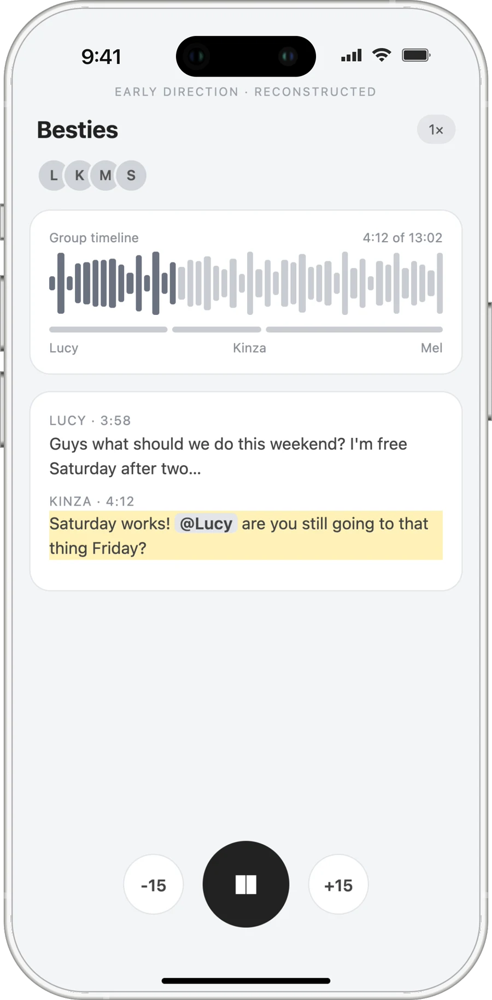
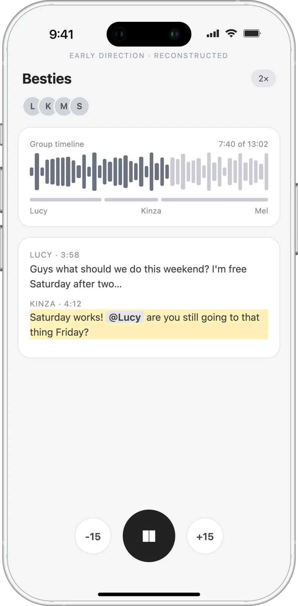
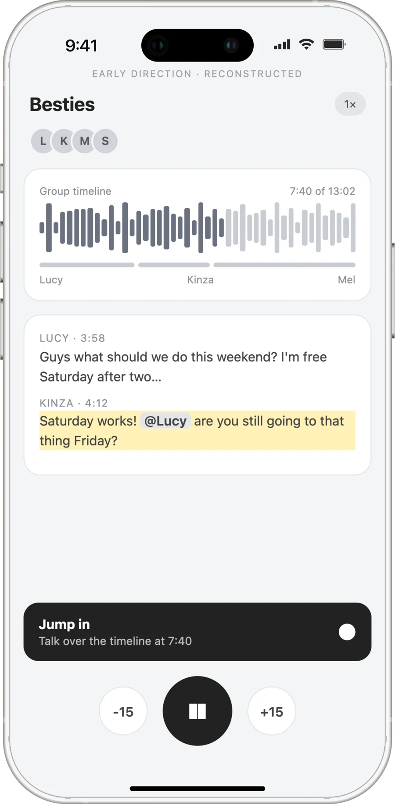
Direct and review
I gave direction in design language, then checked the result in the app.
Most prompts were design notes: keep the container the same size and scale only the art inside it.
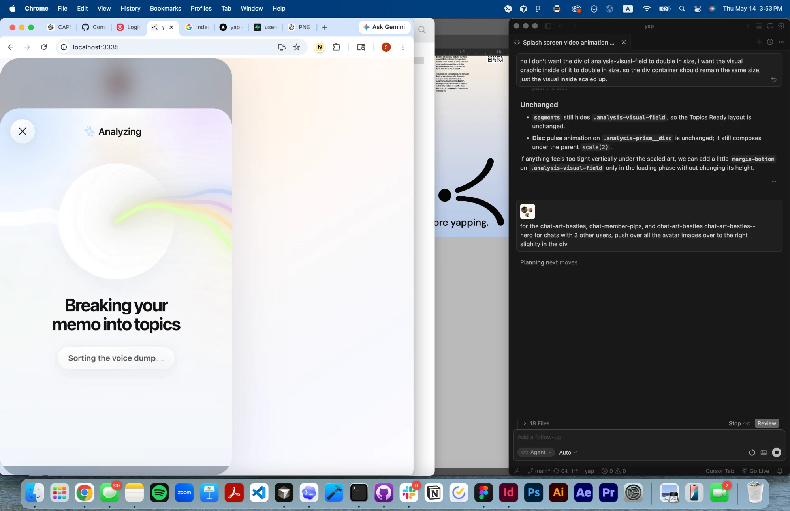
Launch
I launched yap live at MPS Communication Design Demo Day 2026.
A voice app needs a physical presence. I set up a yap station: the app running live, stickers and cards to take, the poster, and a notebook for feedback.


Feedback
People got it in one sentence.
An attendee posted the standout projects from Demo Day, and yap made the list as the “voice inbox for extreme yappers.” Another replied that it got them.
that voice inbox got me fam
— Trong Hatachi (@Trong_Hatachi) May 16, 2026
Reflection
Agents let one designer ship a full product. The design work moved into the rules, the reviews, and the edge cases.
yap didn’t stop at a prototype: it’s live, people use it, and I presented it at Demo Day. The hardest design problems weren’t screens. They were deciding what the model is allowed to do, and what the product does when it’s wrong.

Takeaway
AI can separate topics, match replies, and track what’s been heard – turning fragmented, out-of-sync voice memos into a conversation people can actually follow.